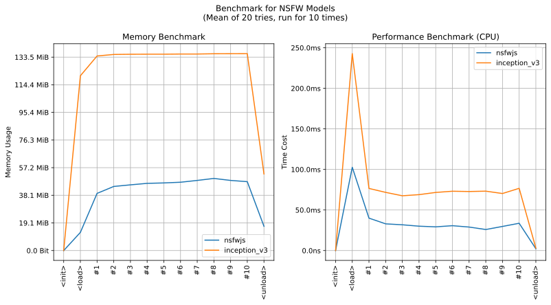

imgutils.validate.nsfw¶
- Overview:
Tool for determining the NSFW (Not Safe for Work) type of a given image, which includes five categories: ‘drawings’, ‘hentai’, ‘neutral’, ‘porn’, and ‘sexy’. It is based on infinitered/nsfwjs, a high-performance model originally in tfjs format, which has been converted to onnx format for deployment, making it suitable for mobile applications.
The following are sample images for testing.

This is an overall benchmark of all the rating validation models:

nsfw_pred_score¶
-
imgutils.validate.nsfw.nsfw_pred_score(image: Union[str, os.PathLike, bytes, bytearray, BinaryIO, PIL.Image.Image], model_name: str = 'nsfwjs') → Mapping[str, float][source]¶ Computes the NSFW prediction scores for the input image.
The function returns a mapping of NSFW category labels to their corresponding prediction scores. The scores represent the predicted probability for each NSFW category.
- Parameters:
image (ImageTyping) – The image to compute prediction scores for.
model_name (str) – The name of the NSFW model to use. (default:
nsfwjs)
- Returns:
The NSFW prediction scores as a mapping of labels to scores.
- Return type:
Mapping[str, float]
nsfw_pred¶
-
imgutils.validate.nsfw.nsfw_pred(image: Union[str, os.PathLike, bytes, bytearray, BinaryIO, PIL.Image.Image], model_name: str = 'nsfwjs') → Tuple[str, float][source]¶ Performs NSFW prediction on the input image.
The function returns the predicted NSFW category label and its corresponding prediction score. The label represents the category with the highest predicted probability.
- Parameters:
image (ImageTyping) – The image to perform NSFW prediction on.
model_name (str) – The name of the NSFW model to use. (default:
nsfwjs)
- Returns:
The predicted NSFW category label and its prediction score.
- Return type:
Tuple[str, float]